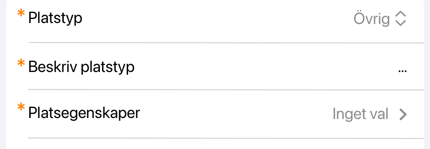
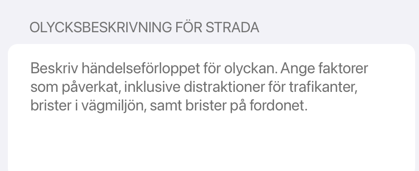
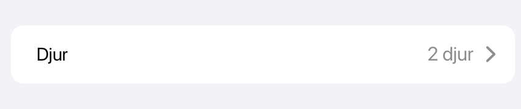

Rebuilding traffic accident reporting for the Swedish Police
Note: All screens contain test data only — no real people, vehicles or cases. Nothing shown is confidential.
I led the work for rebuilding the flow of reporting traffic accidents on the scene. From setting scope to designing possible solutions and leading the work of implementation through two cross-functional teams.
Problem
The current app for reporting traffic accidents led to inefficient work for the officers and its suboptimal output led to unnecessary work for caseworkers and statistics handlers that used the app's output.
This project connected to the Police IT department's goal of "decreasing unnecessary admin time for operational staff".
Result
Officers reported the new flow as much faster and easier. Caseworkers reported the new app's output as easier to work with. Statistics handlers reported no noticeable change.

Defining goals and scope
I set up a forum with experts from each role that handled the data — officers, caseworkers and statistics handlers — to help set the scope and for continuous communication throughout the work.
With the expert group I narrowed the goal down to Decrease reporting time for accidents involving max 3 vehicles which was found to account for roughly 85% of the reported accidents. With the secondary goal of increasing quality of data sent for statistics and casework, or at the very least keeping it at the same quality.
Research
- Querying the Swedish traffic accident database (the same database as the app was reporting to)Acquiring quantitative data to discover the most common denominators for the accidents that were reported by the police on the scene. Initially used to narrow down the scope. Also used in a later design stage to optimize the user flow.
- Three ride-alongs and around 10 interviews with officers reporting accidents regularlyGetting a general feel for how the users experienced the app and observing their pain points
- Staged accident scenarios with actorsNo traffic accidents occurred in the initial ride-alongs. I instead decided to set up two staged accident scenarios with people playing the drivers and witnesses involved, and officers working the case reporting through the app.
- User interviews with caseworkers and statistics handlersUnderstanding how the output from the app was used.
Main discoveries from research
- Users had to input all information before a colleague could continue, including information they didn't have at the scene. This was a major factor in the low quality of output as well as the time it took to complete the flow.
- The sketch of the accident was considered the main painpoint for all three roles involved.
- It was hard for the users to get an overview with the heavy hierarchical navigation that was in the app.
- The situations at the scene are often in stressful environments and need to be resolved quickly.
Decisions
- Build this flow into another already existing police app instead of rebuilding the current oneIt corresponded better with the officers' preferred workflow. Also, instead of having to build a lot of the functionality and data connections from scratch, the existing app already had it set up.
- Send each piece of data as it is enteredThis removed the blocker for colleagues/caseworkers and the officer could fill out the complete information at a later stage in a less stressful situation.
- Increase zoom level in sketch componentUsers' main issue with sketching was that they could not fit the whole accident inside the component.
- Make hierarchy as flat as possible to get a better overviewMy initial design with a hierarchical flow was disliked by all users. A developer in the team then came up with the idea of making an extremely flat design which in the end was a success after user testing. This was also supported by the goal of designing for smaller accidents, making the scrolling not too long for the user even with all vehicles and people in the same view.

The lo-fi prototype was iterated until it looked clearly unfinished. Before that, people assumed they were being shown a finished product and leaned towards "it's fine as it is" instead of saying what they actually thought. - Standard iOS pickers, across the whole appMost inherited single-choice pickers made users navigate into a separate view and back out again. My flow had to stay consistent with the rest of the app, so rather than accept the pattern I started an initiative to replace all of them app-wide, and worked it through with the host team's designers and developers.

The standard inline picker, next to a row that still navigates into a separate view. - Rename fields to state clearly what the info is for

The previous name Händelseförlopp (Sequence of events), was only for statistics but interpreted by most users as input for further casework, which led to the wrong information being input. - Animal accidents as one of the few exceptions of the flat hierarchyAccording to the traffic accident data animals are rarely reported and the components took up a lot of space.

Animals kept as one navigate-in row.
What was deliberately left out
- A full rework of the sketch was left outAlthough the sketch was a key component of the flow and one of the main problems for the users, this was left out after discussions with the devs. Due to technical debt it was considered too time consuming and we settled for a smaller fix of only increasing zoom levels.
- Custom vehicle icons that followed the app's iOS native designThe main use case for the icons was discoverability when scrolling a long page. These icons already existed and discoverability worked well after user testing, so there was no need to build new icons just for the sake of aesthetics.
Outcome
Shipped in 2024. Reporting time was never instrumented, so there is no before-and-after in minutes. What follows is what users and the receiving roles reported in follow-ups.
- Officers reported that they experienced reporting through the new user flow as much faster and easier.
- Officers reported it was easier and quicker to sketch the accident with the higher zoom level.
- Caseworkers and officers stated collaboration was easier since it could now be done directly as a team.
- Statistics handlers reported no decline nor any major improvement in the quality of the statistics output from the app, including the sketch — contrary to my theory that the higher zoom level would improve it.
What I'd do differently today
In a few situations I had to make a tradeoff between function and aesthetics to get a fair level of both. Today I'd lean way more heavily towards function. This is a work tool that needs to be clear and functional, users want to look at this app as little as possible and just finish the task without any obstacles.
The clearest example is text sizes and colours: in this design they follow the iOS standard which looks good aesthetically. However they could be hard to read at times depending on the user and the light conditions, and for an app like this the usability in all situations is a lot more important than aesthetics.